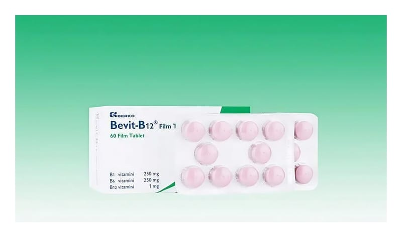

Bevit B12 Film Kaplı Tablet, 30 Adet

Ne için kullanılır
KT · Bölüm 1BEVİT-B12 etkin madde olarak her bir film kaplı tablette 250 mg B1 vitamini, 250 mg B6 vitamini ve 1 mg B12 vitamini içeren bir B vitamini kompleksidir. Her kutuda blister ambalajlarda 30 veya 60 film kaplı tablet bulunmaktadır. • Klinik veya subklinik olarak B1, B6, B12 vitaminlerinin birlikte eksikliğinde veya birlikte eksikliği için risk faktörü bulunan hastalarda kullanılır.